▲ 단풍이 든 협곡에 두 줄기 폭포와 다리가 함께 보이는 내연산 계곡. 어느 폭포인지, 촬영 시기가 언제인지는 확인하지 못했다. 사진=한국관광공사
"지금까지 보아온 8개의 폭포만으로도 내연산 청하골의 진면목을 실감할 수가 있기 때문이다." 포항시 관광 누리집이 내연산 보경사 시립공원을 소개하며, 시명폭 위쪽 폭포까지 찾아가는 이가 드문 이유로 드는 문장이다. 내연산(710m) 청하골에는 폭포가 12개 이어진다. 안내문 문맥상 '8개'는 제1~7폭포에 은폭을 더한 수로 읽히고, 12개는 그 위쪽 시명폭·제1~3복호폭까지 합친 전체다(안내문이 8개를 일일이 열거하지는 않는다). 보경사에서 연산폭포(제7폭포)까지는 왕복 약 6km, 약 2시간이라고 적는다. 이 글은 포항시 관광 누리집, 한국관광공사 TourAPI(detailCommon2·detailIntro2), 구석구석 상세 페이지, 경북동해안지질공원, 보경사 누리집을 2026년 10월 9일에 직접 열어 확인한 값만 썼다. 입장료·주차 요금처럼 공식 페이지에 없는 항목은 "확인하지 못했다"고 그대로 적었다.
💡 먼저 알아둘 세 가지
① 12폭포 탐방로는 공식 정보상 "상시 개방, 연중무휴". 한국관광공사 TourAPI(2026년 3월 17일 수정)와 구석구석 상세 페이지(2026년 3월 16일 수정)에 같은 내용이 올라 있다. 2026년 10월 9일 기준 통제·폐쇄·공사 공지는 찾지 못했다.
② 단, "기상 여건에 따라 출입통제"가 붙는다. 내연산 보경사 시립공원 항목에는 이용 시간 06:00~18:00과 이 문구가 함께 적혀 있다.
③ 입장료·주차 요금은 공식 안내에 없다. 포항시 관광 누리집과 TourAPI에 요금 항목이 없어 금액을 쓰지 않았다.
1. 한눈에 보기 — 개방·요금·주차·문의
| 항목 | 공식 안내 내용 | 확인 출처 |
|---|---|---|
| 위치 | 경북 포항시 북구 송라면 보경로 53(12폭포), 보경사는 보경로 523, 시립공원 구역은 송라면 중산리 일원 | TourAPI |
| 12폭포 개방 | 상시 개방, 연중무휴 | TourAPI(수정 2026.3.17), 구석구석(수정 2026.3.16) |
| 시립공원 이용 시간 | 06:00~18:00, 연중무휴, 기상 여건에 따라 출입통제 | TourAPI(수정 2025.11.28) |
| 보경사 이용 시간 | 06:00~18:00, 연중무휴, 템플스테이 운영 | TourAPI(수정 2025.11.28) |
| 입장료 | 공식 안내에서 확인하지 못함(요금 항목 없음) | 포항시 관광 누리집, TourAPI |
| 주차 | 주차 가능. 장애인 전용 주차구역 있음. 요금·주차 면수는 확인하지 못함 | TourAPI, 구석구석 |
| 문의 | 시립공원 안내소 054-240-7555, 보경사 054-262-1117, 경북동해안지질공원 054-783-9195, 관광안내 1330 | TourAPI, 포항시 관광 누리집 |
| 공식 누리집 갱신 | 포항시 관광 누리집 해당 페이지 "최근 업데이트 2026-04-27" | 포항시 관광 누리집 |
이용 시간이 두 줄로 갈린다는 점이 눈에 띈다. 12폭포 항목은 "상시 개방"이고, 시립공원 항목은 06:00~18:00이다. 두 값이 어떤 관계인지 공식 자료는 설명하지 않는다. 계곡 깊이 들어가는 일정이라면 18:00을 기준으로 잡고, 안전을 위해 오후 일찍 내려오는 쪽이 낫다. 공식 문의처는 위 표의 안내소(054-240-7555)다. 포항시 관광 누리집 바로가기
▲ 단풍이 든 협곡에 두 줄기 폭포와 다리가 함께 보이는 내연산 계곡. 어느 폭포인지, 촬영 시기가 언제인지는 확인하지 못했다. 사진=한국관광공사
2. 지금 열려 있나 — 통제·공사 공지를 직접 찾아본 결과
이 글에서 가장 중요한 확인 항목이다. 아래는 2026년 10월 9일에 직접 열어 본 곳과 결과다.
| 확인한 곳 | 본 내용 | 결과 |
|---|---|---|
| 한국관광공사 TourAPI — 내연산 보경사 12폭포(contentid 126067) | "상시 개방", "연중무휴", 주차 가능, 수정일 2026.3.17 | 개방 |
| 한국관광공사 TourAPI — 내연산 보경사 시립공원(126042) | 06:00~18:00, 연중무휴, "기상 여건에 따라 출입통제", 수정일 2025.11.28 | 조건부 통제 문구만 있음 |
| 구석구석 상세 페이지 — 내연산 보경사 12폭포 | "상시 개방", "연중무휴", 수정일 2026.3.16, 구체적 탐방로 상태 정보는 없음 | 개방 |
| 포항시 관광 누리집 — 내연산 보경사 시립공원 | 소개·거리 안내만 있고 통제·공사 안내문은 없음, 최근 업데이트 2026-04-27 | 통제·공사 공지 없음 |
| 보경사 누리집 공지사항 | 최신 공지는 2026년 10월 7일자 달력·김장 보시 안내, 8월·9월 기도·합동 차례 안내이며 탐방로 관련 공지는 없음 | 탐방로 공지 없음 |
✅ 확인하지 못한 것
· 2026년 가을 기준 12폭포 탐방로의 통제·폐쇄·안전시설 공사를 알리는 포항시 공지는 이번에 찾지 못했다. "공지가 없다"는 것이 "공사가 없다"는 증명은 아니다
· 2026년 폭우·시설 공사·통제 보도를 검색했지만 내연산·보경사 관련 기사는 찾지 못했다. 이것도 없다는 증명은 아니다
· 개방 공지의 수정일(2026년 3월)이 가을 현황을 보증하지는 않는다. 가기 전 안내소(054-240-7555)에 전화로 확인하는 것이 가장 정확하다
· 올가을 포항시의 산불조심기간 입산 통제 일정은 공고를 확인하지 못했다(아래 7장 참고)
3. 폭포 12개, 순서대로 — 공식 안내문 기준
포항시 관광 누리집의 설명에 따르면 청하골은 천년고찰 보경사에서 시작한다. 보경사를 지나 물길과 나란히 이어지는 등산로를 1.5km쯤 오르면 제1폭포가 나온다. 이어서 제2~5폭포가 나타나고, 가장 경관이 빼어난 곳은 제6폭포 관음폭포와 제7폭포 연산폭포 언저리다. 관음폭포 앞쪽 암벽의 벼룻길을 지나 15분쯤 물길을 따라가면 은폭이 나오고, 그 위쪽으로 시명폭과 제1·2·3복호폭이 이어지지만 거기까지 찾아가는 이는 드물다고 안내문은 적는다.
| 순서 | 이름 | 공식 안내문의 설명 |
|---|---|---|
| 제1폭포 | 쌍생폭포(TourAPI 소개문은 상생폭포로 표기) | 보경사에서 약 1.5km. 두 물길이 양옆으로 나란히 떨어지는 모양, 높이 5m(TourAPI) |
| 제2~5폭포 | 보현폭포·삼보폭포·잠룡폭포·무봉폭포 | 제1폭포 이후 잇따라 나타남. 잠룡폭포 주변 골짜기는 영화 〈남부군〉의 한 장면 촬영지 |
| 제6폭포 | 관음폭포 | 쌍폭. 주변에 선일대·신선대·관음대·월영대 절벽, 옆에 관음굴. 높이 72m(TourAPI) |
| 제7폭포 | 연산폭포 | 관음폭포 위 구름다리를 건너면 보이는 폭포. 높이 30m, 길이 40m, 절벽 이름은 학소대 |
| 은폭 | 은폭(隱瀑) | 관음폭포 앞 암벽 벼룻길을 지나 물길을 따라 약 15분. 숨겨져 있다는 뜻 |
| 그 위쪽 | 시명폭, 제1·2·3복호폭 | 찾아가는 이가 드문 구간. 거리·시간은 공식 안내문에 없음 |
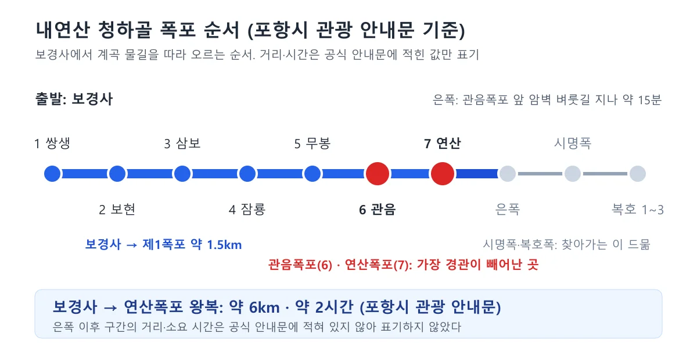
▲ 포항시 관광 누리집의 폭포 순서와 거리·시간을 정리한 도표. 공식 안내문에 적힌 값만 표기했다. 도표=CarPrism
폭포가 8개라는 말이 제목에 나온 이유가 여기 있다. 안내문이 "지금까지 보아온 8개"라고 한 것은 문맥상 제1~7폭포에 은폭을 더한 수로 읽힌다. 안내문은 이 8개만 봐도 청하골의 진면목을 실감할 수 있다고 적는다. 다만 왕복 약 6km·약 2시간은 연산폭포까지의 값이고, 은폭까지 다녀오는 시간은 안내문에 따로 없다. 12개를 전부 볼 것인지는 체력과 시간으로 정하되, 8번째 은폭 이후 구간의 거리·소요 시간·난이도는 공식 자료에서 확인하지 못했다.
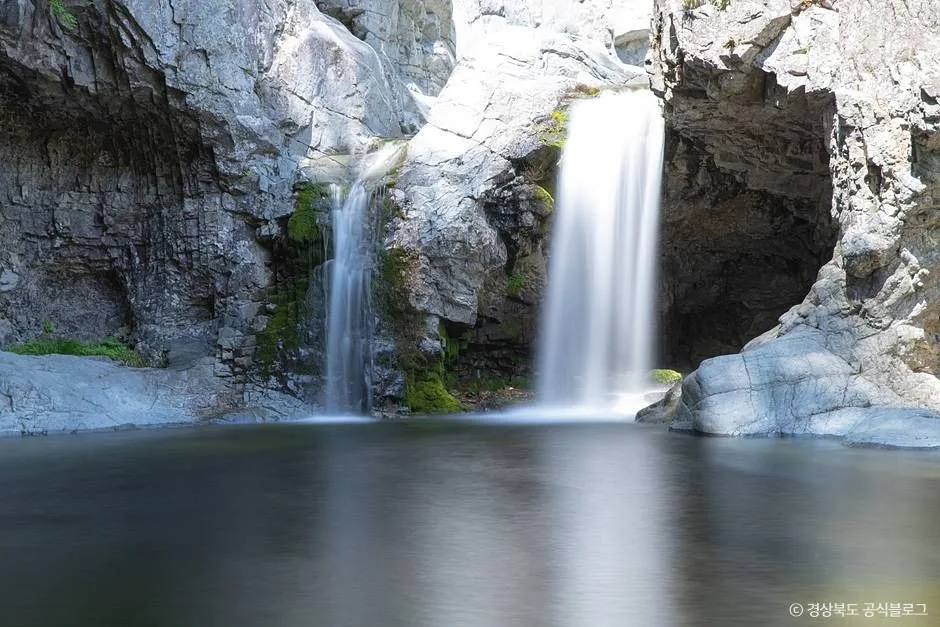
▲ 바위 절벽 사이에서 두 줄기 물이 짙은 소로 떨어지는 폭포. 폭포 이름과 촬영 시기는 확인하지 못했다. 사진=한국관광공사(이미지 내 '경상북도 공식블로그' 표기)
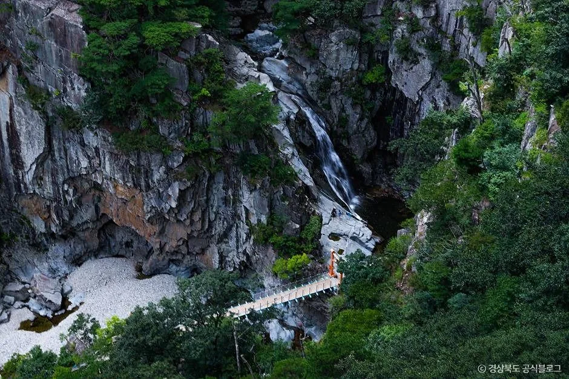
▲ 푸른 숲에 둘러싸인 바위 협곡의 폭포와 아래쪽 보행교. 폭포 이름과 촬영 시기, 보행교가 12폭포 탐방로 시설인지는 확인하지 못했다. 사진=한국관광공사(이미지 내 '경상북도 공식블로그' 표기)
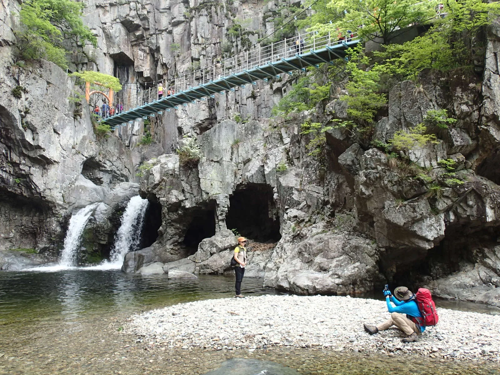
▲ 쌍폭과 그 위로 걸린 구름다리, 동굴 같은 바위 구멍이 보이는 내연산 계곡. 파일 설명에는 '내연산'이라고만 적혀 있어 관음폭포인지는 단정하지 않는다. 2014년 5월 4일 촬영. 사진=Raki_Man / Wikimedia Commons, CC BY 3.0
4. 보경사에서 연산폭포까지 — 왕복 6km, 약 2시간의 구성
포항시 관광 누리집은 보경사에서 연산폭포까지 다녀오는 데 대략 2시간(왕복 6km쯤)이 걸린다고 안내한다. 등산로가 잘 닦여 있어 어린아이나 노인도 오르내릴 수 있다는 설명도 붙어 있다. TourAPI 12폭포 소개문도 "보경사에서 연산폭포까지 등산로가 정비되어 있어 누구나 쉽게 오를 수 있다"고 적는다. 12폭포 계곡 자체는 약 10km에 이른다고 TourAPI는 소개한다.
| 구간 | 공식 안내 수치 | 출처 |
|---|---|---|
| 보경사 → 제1폭포 | 약 1.5km | 포항시 관광 누리집 |
| 보경사 → 연산폭포 왕복 | 약 6km, 대략 2시간 | 포항시 관광 누리집 |
| 관음폭포 앞 벼룻길 → 은폭 | 물길 따라 약 15분 | 포항시 관광 누리집 |
| 포항 기준 거리 | 포항에서 북쪽으로 약 30km, 계곡 길이 약 10km | TourAPI |
| 구간별 난이도·경사 | 연산폭포까지는 정비된 등산로라는 설명 외에 구간별 수치 없음 | TourAPI, 포항시 관광 누리집 |
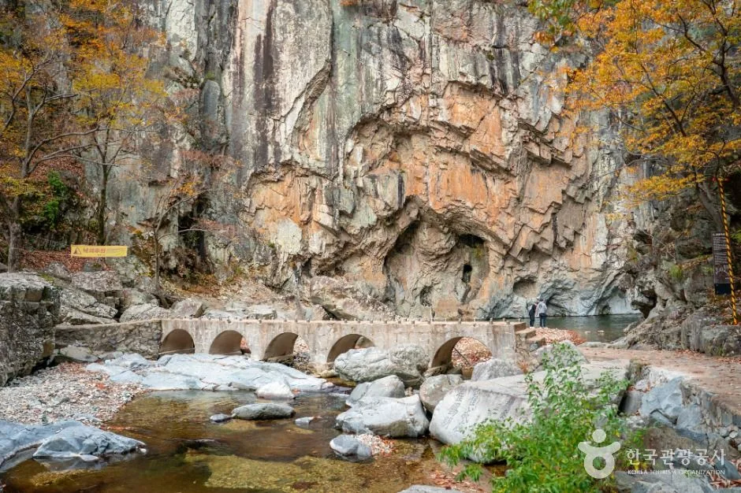
▲ 절벽 아래 계곡을 가로지르는 돌 아치 다리. 위치와 촬영 시기는 확인하지 못했다. 사진=한국관광공사
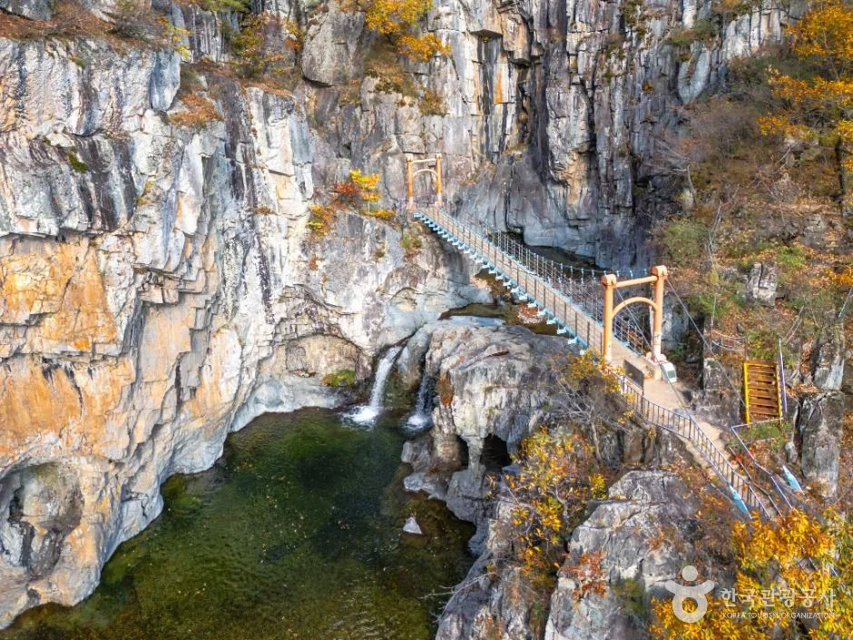
▲ 푸른 소 위에 현수교가 걸린 협곡. 관음폭포 위 구름다리인지는 확인하지 못했다. 사진=한국관광공사
누구나 오를 수 있다는 표현은 연산폭포까지의 정비 구간에 해당한다. 그 이후와 은폭 너머의 안전 설비 상태는 이번 확인 범위에서 공식 근거를 찾지 못했다. 사진 속 다리나 데크가 어느 지점인지도 출처가 알려 주지 않아 캡션에는 단정하지 않았다.
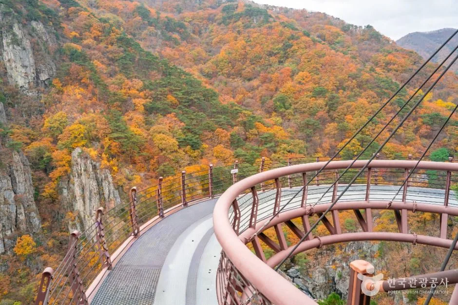
▲ 붉은 난간의 곡선형 데크와 단풍 든 산세. 내연산 전망 시설로 소개된 사진인지는 확인하지 못했다. 사진=한국관광공사
5. 왜 폭포가 12개나 이어질까 — 경북동해안지질공원의 설명
경북동해안지질공원은 내연산 12폭포를 지질 명소로 소개한다. 계곡을 이루는 암석은 뜨거운 화산재가 굳어 만들어진 응회암으로, 식는 과정에서 부피가 줄어 갈라진 틈(절리)이 촘촘하게 발달했다. 이 틈으로 스며든 물이 얼었다 녹기를 되풀이하면 틈이 벌어지고, 절리가 많은 부분은 더 쉽게 부서져 떨어져 나간다. 깎인 절벽에서 물이 떨어지며 폭포가 되고, 떨어지는 물줄기는 바닥을 파 둥근 웅덩이(폭호)를 만든다. 폭포가 만들어지는 모습은 관음폭포에서, 아래 웅덩이가 깊어지는 모습은 상생폭포에서 특히 잘 보인다고 지질공원은 설명한다. 이 설명에는 중생대 백악기 암석이라는 분류도 붙어 있다. 경북동해안지질공원 바로가기
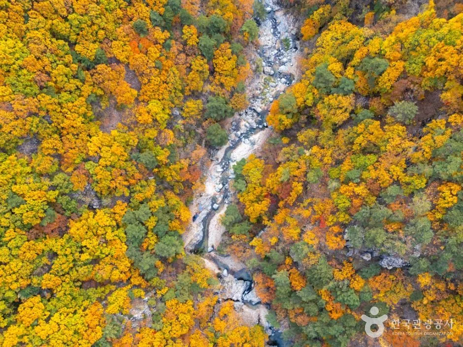
▲ 단풍 든 숲 사이로 물줄기가 길게 이어지는 계곡의 항공 사진. 촬영 시기와 정확한 위치는 확인하지 못했다. 사진=한국관광공사
6. 보경사 — 12폭포 들머리의 천년고찰
12폭포 탐방의 출발점인 보경사는 TourAPI 소개문 기준으로 대한불교조계종 제11교구 본사 불국사의 말사다. 602년(신라 진평왕 24년) 진나라에서 유학하고 돌아온 지명법사가 603년에 창건했다고 전한다. 현존 당우로는 대적광전, 대웅전, 영산전, 팔상전이 있고, 문화유산으로 보물 8점과 경북도문화유산 2점, 1974년 경상북도 기념물로 지정된 탱자나무가 있다. 포항시 관광 누리집은 원진국사비(보물 제252호)와 원진국사부도(보물 제430호)를 대표 문화재로 든다. 보경사 누리집 대표전화는 054-262-1117이다. 보경사 누리집 바로가기
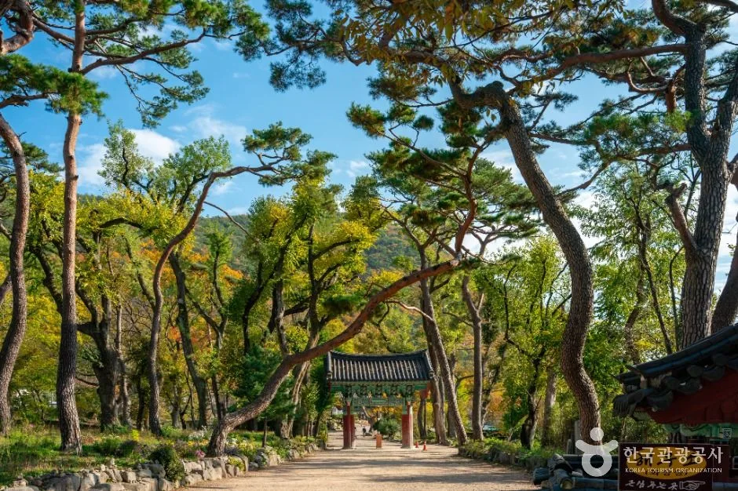
▲ 소나무가 늘어선 사찰 진입로. 보경사 입구 길로 소개된 사진이지만 촬영 시기는 확인하지 못했다. 사진=한국관광공사
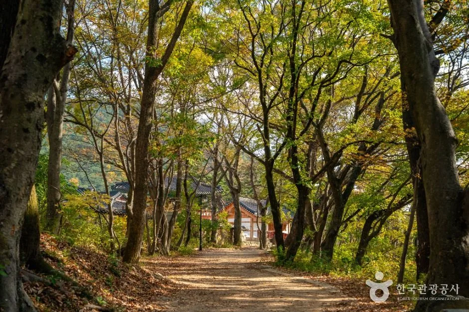
▲ 큰 나무가 늘어선 숲길. 보경사 경내 진입로로 소개된 사진이며 촬영 시기는 확인하지 못했다. 사진=한국관광공사
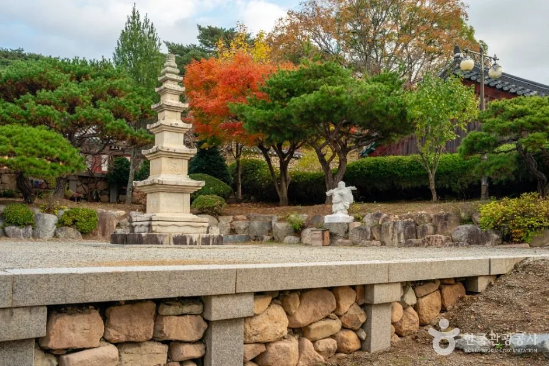
▲ 단풍 든 나무 사이의 오층 석탑. 보경사 오층석탑으로 소개된 사진이지만 촬영 시기는 확인하지 못했다. 사진=한국관광공사
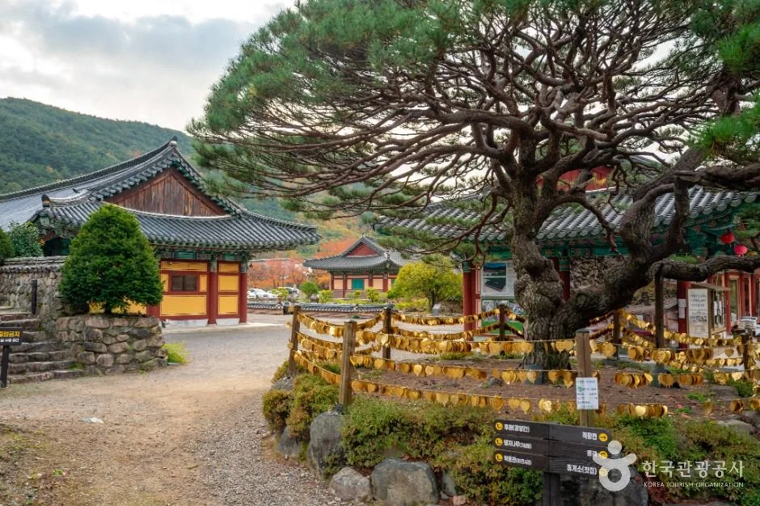
▲ 가지가 넓게 뻗은 노송과 사찰 전각. 보경사로 소개된 사진이며 촬영 시기는 확인하지 못했다. 사진=한국관광공사
7. 단풍철과 산불철 — 날짜를 쓰지 않은 이유
내연산 단풍 절정일은 이 글에 적지 않는다. 카프리즘이 발행한 산림청 2026 단풍 지도 기사와 단풍 주말표 기사에서 내연산 날짜를 확인하지 못했고, 포항시·보경사 누리집에도 2026년 단풍 예측은 없었기 때문이다. 실제 사진 속 단풍(TourAPI)은 촬영 시기를 알 수 없어 시기 판단에 쓰지 않았다.
산불철은 별개의 확인 항목이다. 2025년 가을철 산불조심기간은 10월 20일부터 12월 15일까지 57일이었고, 올가을 기간은 2026년 10월 9일 기준 공고를 확인하지 못했다. 기간과 탐방로별 통제는 서로 다른 제도라는 점은 산불철 탐방로 통제 기사에 정리해 두었다. 내연산 보경사 시립공원 항목의 "기상 여건에 따라 출입통제" 문구는 같은 맥락에서 읽어야 하며, 포항시가 올가을 내연산 구간을 따로 통제하는지는 공식 자료로 확인하지 못했다.
💡 계절 주의사항(공식 안내에 있는 것만)
· 시립공원 항목: "기상 여건에 따라 출입통제"
· 계곡·폭포 지형이라 비·결빙 때 물과 암반이 미끄럽다는 구체적 공식 경고문은 이번에 찾지 못했다. 위 문구가 공식 안내의 전부다
· 산불조심기간 화기·인화물질 반입 금지와 비법정 탐방로 출입 금지는 산림청 공고(2025년분)의 일반 규정이며, 2026년 공고는 확인하지 못했다
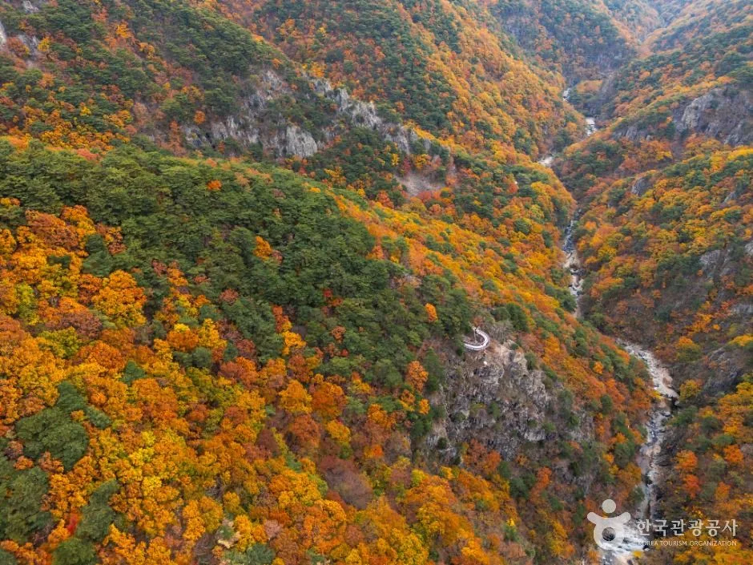
▲ 단풍 든 산비탈과 깊은 골짜기. 내연산 일대로 소개된 사진이며 촬영 시기는 확인하지 못했다. 사진=한국관광공사
8. 가는 길과 이어 가기 — 확인한 것만
보경사 누리집 "찾아오시는길"에는 자가용은 포항과 영덕 사이 7번 국도를 이용하라고 적혀 있다. 대중교통은 포항 터미널 건너편 정류장에서 "보경사"라고 적힌 5000번 버스를 타라는 안내가 있다. 약 1시간 걸리고, 보경사가 적히지 않은 510번을 타면 안 된다고 한다. 같은 페이지에 시간표도 있지만 게시일이 없어 최신인지 확인하지 못했다. 정확한 운행 시각은 포항시 대중교통 공지나 1330 관광안내에서 확인해야 한다. 도로 상황과 주말 혼잡 정도는 공식 자료가 없어 쓰지 않았다.
같은 동해안 길에서 이어 갈 만한 곳은 이미 발행된 기사로 대신한다. 영덕 블루로드에서 호미곶까지 이어 달리는 해안 코스는 영덕 블루로드~호미곶 기사, 동해 쪽 계곡 트레킹은 동해 무릉계곡 베틀바위 기사, 해안 도로 전체 흐름은 7번 국도 드라이브 기사에서 다뤘다. 북쪽 울진의 숲길·사찰은 같은 날 발행한 울진 불영사·금강소나무숲길 기사를 참고하면 된다. 포항시 관광 누리집이 소개하는 지역 연계 관광에는 영덕·경주·울산 문화관광이 있지만, 구체적인 이동 시간은 공식 자료로 확인하지 못했다.
✅ 출발 전 체크리스트
· 12폭포 탐방로: 공식 정보상 상시 개방·연중무휴(TourAPI 수정 2026.3.17), 올가을 통제·공사 공지는 확인하지 못함
· 시립공원 이용 시간 06:00~18:00, "기상 여건에 따라 출입통제" — 안내소 054-240-7555 사전 확인
· 연산폭포까지 왕복 약 6km, 약 2시간(포항시 관광 누리집). 은폭은 관음폭포 앞 벼룻길 지나 약 15분
· 입장료·주차 요금은 공식 안내에서 확인하지 못함. 주차는 가능(장애인 전용 구역 있음)
· 올가을 산불조심기간 공고와 포항시 입산 통제 일정은 미확인
· 확인일: 2026년 10월 9일
9. 정리
내연산 보경사 12폭포는 공식 정보상 상시 개방·연중무휴이고, 보경사에서 연산폭포까지는 왕복 약 6km·약 2시간이다. 폭포는 제1~7폭포에 은폭을 더한 8개만 봐도 진면목을 실감한다는 것이 포항시 안내문의 설명이며, 시립공원 항목에는 06:00~18:00과 "기상 여건에 따라 출입통제"가 함께 적혀 있다.
올가을 탐방로 통제·공사 공지, 입장료·주차 요금, 2026년 내연산 단풍 절정일, 은폭 이후 구간의 거리·시간, 올가을 산불조심기간 공고는 공식 자료로 확인하지 못했다. 가기 전 안내소(054-240-7555)에 전화로 확인하자.